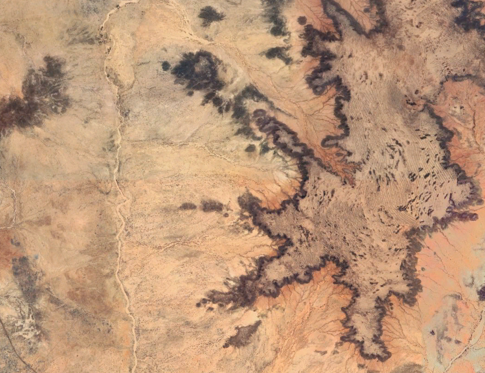
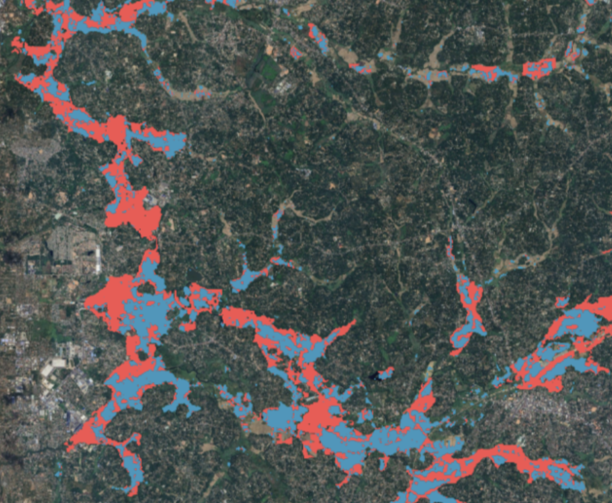
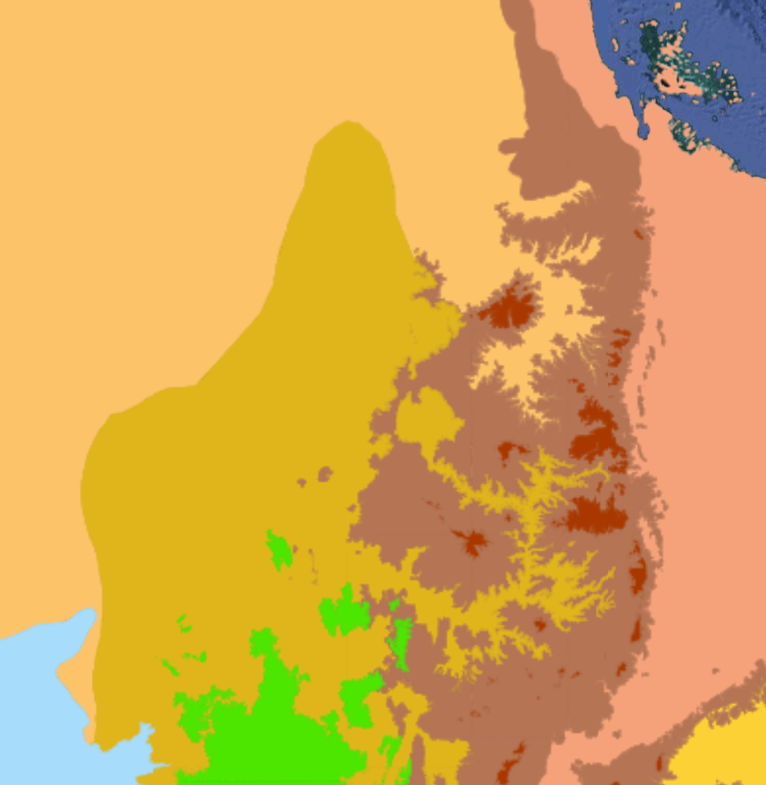
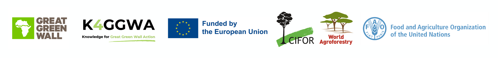
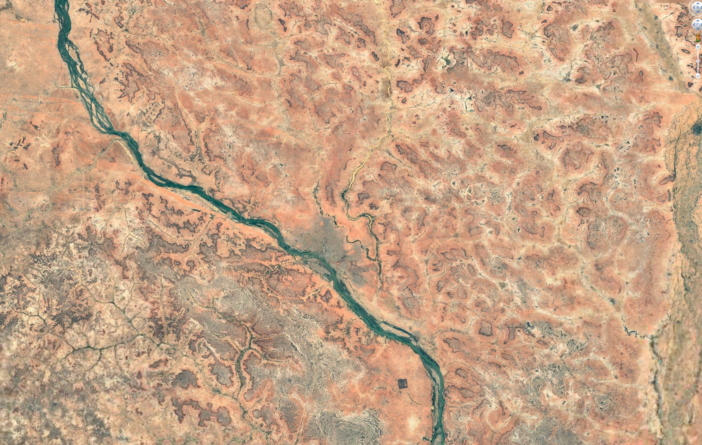
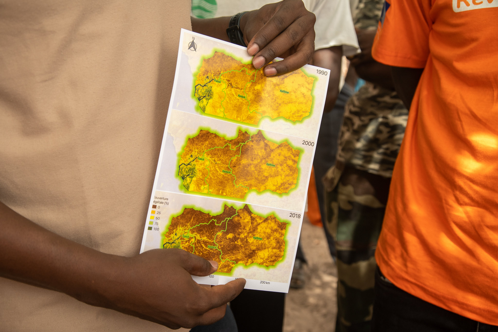
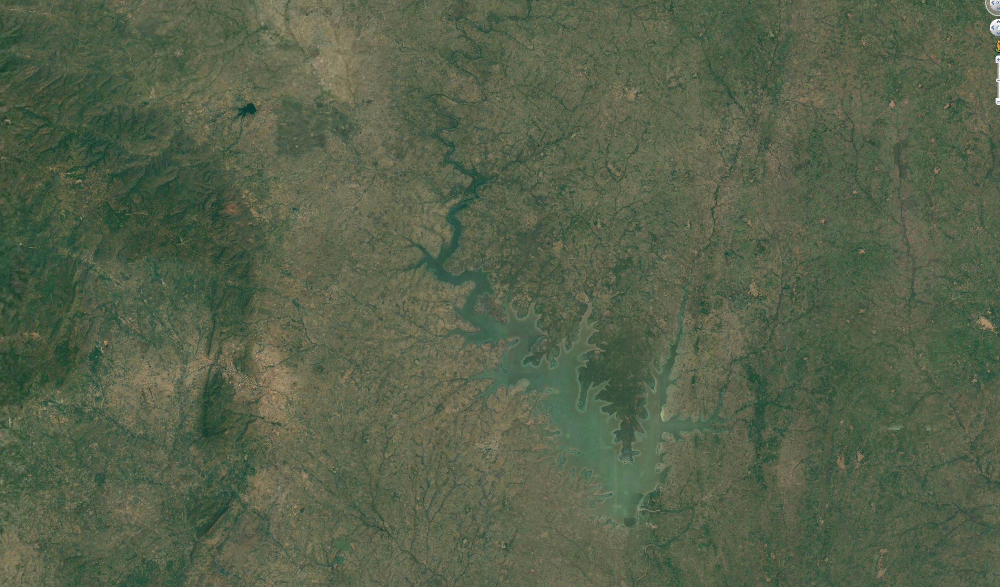
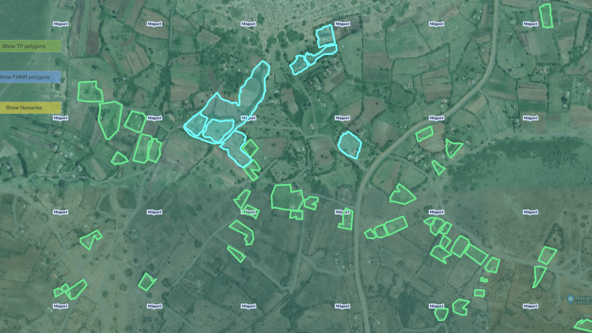
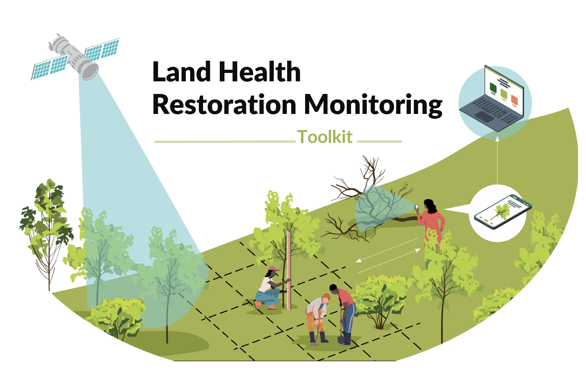

Biodiversity & FMNR: An Interactive Story
Learn about how FMNR practices shape dryland tree species diversity across the GGW
1 min
Mar 15, 2025
Data, evidence and tools to support Great Green Wall decision-making - from landscape health analytics to citizen science and restoration stories across the Sahel and Horn of Africa.




Knowledge for Great Green Wall Action (K4GGWA) is a joint initiative of CIFOR-ICRAF and the Food and Agriculture Organization of the United Nations (FAO), funded by the European Union. The platform brings together stories, data, and tools to support decision-making across the Great Green Wall region.
Here you can explore data and restoration stories from across the Sahel and Horn of Africa, access state-of-land analyses and reports, and follow key workshops and events. The K4GGWA Dashboard provides interactive maps and visualisations to help partners monitor landscape change, assess risks and opportunities, and track progress towards Great Green Wall goals.





Use high-resolution indicators on vegetation dynamics, soil conditions, and climate to understand landscape-scale trends, patterns and build a reliable baseline. Spatial data help identify opportunities, risks and data gaps, supporting realistic and cost-effective project appraisal.
Combine multiple indicators to identify and prioritise areas with strong ecological potential and favourable implementation conditions. This supports strategic use of limited budgets, reduces project risk, and creates a shared, evidence-based foundation for coordination across partners.
Spatial evidence provides critical information on site-level constraints from soil fertility, water availability, climate exposure, and land use, helping teams design and select interventions that are technically viable and affordable. Optimise project design, scope project trade-offs, and minimise surprises during implementation.
Track landscape change with consistent and timely spatial metrics to understand where interventions are effective and where adjustments are needed. Quantified evidence strengthens accountability, supports adaptive management, and improves confidence among funders, partners, and local stakeholders.

A collection of tools and resources to support data-driven landscape assessment, site targeting, intervention design, monitoring and reporting.
LAUNCH TOOLKITSTATE OF THE LAND
An interactive, long-form assessment of land health, climate risk, vegetation dynamics and restoration opportunities across the Great Green Wall region. Explore maps, charts and stories that connect regional patterns to local realities.

Interactive dashboards bring together satellite data, field surveys and project information to help partners understand land health, climate risks and restoration opportunities across the Great Green Wall region.
Filter by country and administrative unit, explore indicators like soil organic carbon, erosion and tree cover, and download summary statistics to support planning and reporting.
Demo of the K4GGWA dashboard showing land health indicators across Great Green Wall countries.